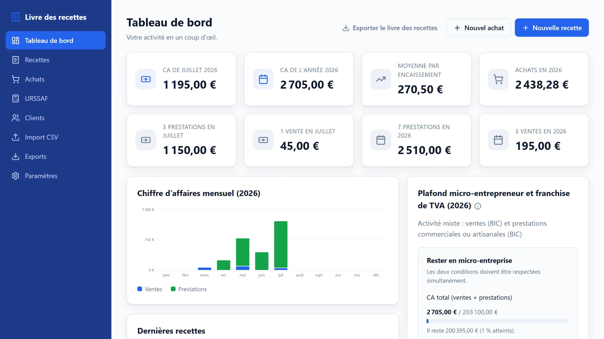
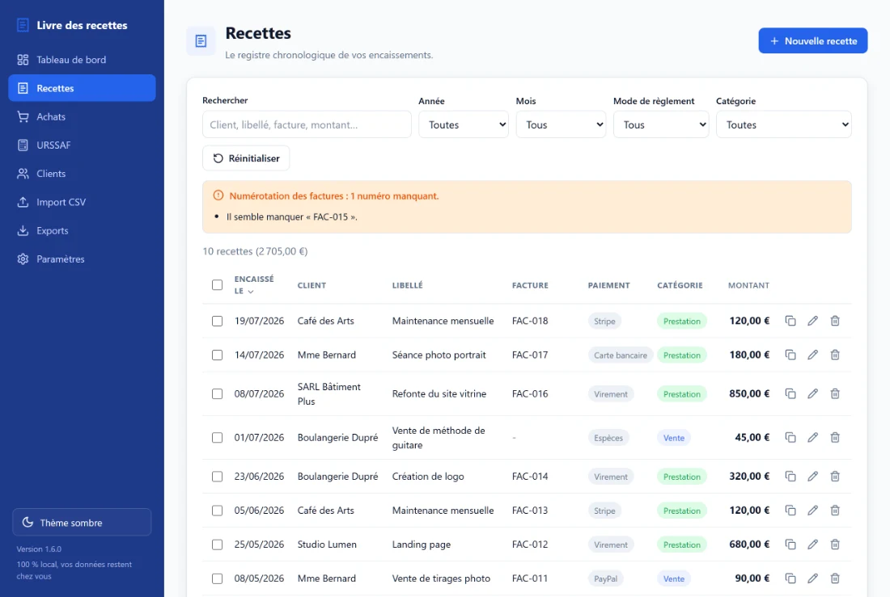
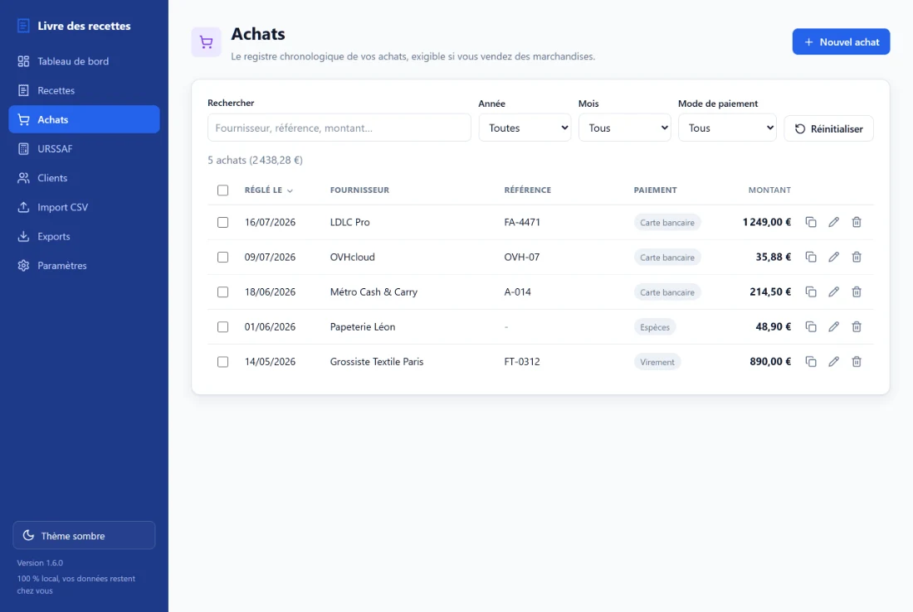

Le livre des recettes
Les six colonnes du registre légal, dans l’ordre chronologique des encaissements. Saisie assistée, auto-complétion des libellés, suggestion du prochain numéro de facture et duplication en un clic pour vos paiements récurrents.
Version 1.7 Gratuit, open source, hors ligne
L’application gratuite qui tient le livre des recettes et le registre des achats des micro-entrepreneurs français. Elle s’installe en un fichier, fonctionne hors ligne, et vos données ne quittent jamais votre ordinateur.
Sans compte, sans publicité, sans abonnement. Windows, macOS et Linux.

Pourquoi cette application
Un livre des recettes tenu sous Excel finit toujours par dériver : une formule écrasée, un mois oublié, un total qui ne tombe plus juste, et aucun moyen de savoir s’il manque une facture. Cette application fait la même chose, en vous évitant ces pièges et en beaucoup plus simple.
Fonctionnalités
Une seule mission, faite complètement : vos registres obligatoires, leurs exports, et les chiffres qui vous évitent les mauvaises surprises en fin d’année.
Les six colonnes du registre légal, dans l’ordre chronologique des encaissements. Saisie assistée, auto-complétion des libellés, suggestion du prochain numéro de facture et duplication en un clic pour vos paiements récurrents.
Obligatoire dès que vous revendez des marchandises : les cinq colonnes légales, dans l’ordre chronologique des règlements, avec les mêmes automatismes.
Plafond micro-entrepreneur et franchise en base de TVA suivis en continu : montant restant, pourcentage atteint, seuil majoré, et avertissement avant le dépassement.
Un mois, un trimestre ou l’année : le chiffre d’affaires à déclarer est calculé et les cotisations estimées au taux en vigueur le jour de chaque encaissement.
Vos deux registres en PDF, Excel et CSV, totaux mensuels et annuel inclus. Un contrôle repasse d’abord les points qu’un vérificateur regarderait.
Un client professionnel se retrouve par son SIREN ou SIRET dans l’annuaire public, avec son nom exact récupéré pour vous.
Votre tableau Excel reprend sa place : import CSV, correspondance des colonnes, détection des doublons et sauvegarde automatique juste avant.
Un PDF pour vous : répartition du chiffre d’affaires, panier moyen, évolution mois par mois et meilleurs clients.
Vie privée
Pas de compte, pas de serveur, pas de synchronisation silencieuse. L’application tourne sur votre machine et enregistre tout dans un fichier que vous pouvez ouvrir, copier et sauvegarder vous-même.
Recettes, achats, clients et paramètres tiennent dans
Documents / Livre des recettes. Changer
d’ordinateur revient à copier ce dossier.
Aucune connexion nécessaire pour saisir, calculer ou exporter. Deux fonctions seulement contactent l’extérieur (recherche de SIRET), à votre demande, et sans jamais transmettre vos écritures.
Une copie de secours à chaque saisie, puis des sauvegardes quotidiennes, hebdomadaires et mensuelles rangées ailleurs que vos données. Restauration en un clic.
En images
Chaque encaissement dans l’ordre chronologique, avec son client, son libellé, son numéro de facture et son mode de règlement. Recherche libre, filtres par année, mois, mode et catégorie, tri par colonne et sélection multiple.
La numérotation des factures est surveillée en permanence : ici, l’application signale qu’un numéro manque dans la série, sans jamais rien bloquer.

Le second registre exigible dès que votre activité comporte de la revente de marchandises : date du règlement, fournisseur, référence du justificatif, mode de paiement et montant.
Mêmes automatismes, mêmes exports, et un total de vos achats de l’année directement sur le tableau de bord.

Installation
Pas d’installateur, pas de compte à créer, rien à configurer. Vous lancez le fichier, l’application s’ouvre dans votre navigateur et vos données sont rangées dans votre dossier Documents.
Il vous faut simplement Node.js 18 ou plus récent. Aucune base de données, aucune compilation, aucune étape de construction.
$ git clone https://github.com/RDSV01/livre-des-recettes.git $ cd livre-des-recettes $ npm install $ npm start # l’application s’ouvre sur http://localhost:3000
Vos obligations
Les micro-entrepreneurs doivent tenir un livre des recettes. Ceux dont l’activité comporte de la vente de marchandises doivent y ajouter un registre des achats. Les exports de l’application reprennent exactement ces colonnes.
Obligatoire pour toutes les activités, dans l’ordre chronologique des encaissements.
Obligatoire pour les activités d’achat et de revente de marchandises, dans l’ordre chronologique des règlements.
Questions fréquentes
Oui. Tout micro-entrepreneur doit tenir un livre des recettes présentant, dans l’ordre chronologique des encaissements, le montant et l’origine des recettes, le mode de règlement et les références des pièces justificatives. Les activités d’achat et de revente de marchandises doivent en plus tenir un registre des achats.
Ces documents doivent pouvoir être présentés en cas de contrôle et conservés pendant dix ans.
Oui, entièrement et sans contrepartie : aucun compte à créer, aucune version payante, aucune fonctionnalité réservée, aucune publicité et aucun traceur.
Le code source est publié sous licence MIT : vous pouvez le consulter, le copier et le modifier librement.
Non. L’application s’exécute sur votre ordinateur et enregistre tout dans un fichier local. Aucune donnée comptable n’est transmise à qui que ce soit.
Deux fonctions seulement contactent l’extérieur, sans jamais envoyer vos écritures : la recherche d’un client par SIRET dans l’annuaire public des entreprises, que vous déclenchez vous-même, et la vérification d’une nouvelle version au démarrage, que vous pouvez désactiver dans les paramètres.
Ni l’un ni l’autre. Vous téléchargez un fichier unique et vous le lancez : l’application s’ouvre dans votre navigateur. Il n’y a pas d’installateur, pas de compte, pas d’abonnement et pas de base de données à configurer.
Oui. Exportez votre tableur au format CSV puis importez-le dans l’application : vous associez vos colonnes aux champs du registre, les doublons sont détectés, un rapport s’affiche avant validation, et une sauvegarde est créée juste avant l’import pour pouvoir revenir en arrière.
Tout tient dans un seul fichier : il suffit de copier le dossier « Livre des recettes » sur le nouveau poste.
L’application tient par ailleurs des sauvegardes automatiques rangées hors du dossier de données, avec une copie de secours mise à jour à chaque saisie. Vous pouvez aussi télécharger une copie de vos données à tout moment depuis les paramètres.
Elle en donne une estimation. Vous choisissez un mois, un trimestre ou l’année, et l’application calcule le chiffre d’affaires encaissé de la période puis estime les cotisations au taux correspondant à votre activité, en vigueur le jour de chaque encaissement.
Il s’agit d’un calcul local destiné à vous aider à remplir votre déclaration. L’application ne se connecte pas à l’URSSAF et ne télédéclare rien à votre place.
Non. Elle vous aide à tenir vos registres et à suivre vos seuils, mais elle ne constitue ni un conseil comptable ou juridique, ni un logiciel de caisse certifié, ni un outil de télédéclaration.
En cas de doute sur vos obligations, rapprochez-vous de l’URSSAF ou d’un professionnel du chiffre.
Prêt à commencer
Téléchargez l’application, chargez le jeu de démonstration pour la découvrir en une minute, puis effacez-le d’un clic quand vous voulez commencer pour de bon.